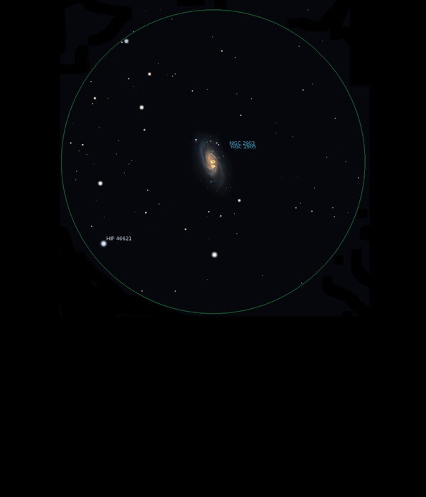

NGC 2903
Barred
Spiral Galaxy in Leo
NGC 2903
Mag 9.7
10/03/16
Big and bold in both
25mm and 12mm with a distinct shape and structure visible in both
eyepieces although rather washed out
In 25mm sits
just above a 'bowl' asterism of four stars of which
HIP 46621 at
Mag 6.90
is the brightest, the other stars being of Mags
7.45, 8.80 and 9.85
There is
apparently a Mag 10.0 Galaxy (NGC 2905) which
sits within it, but no discernible
blob within NGC 2903
Definitely
worth
a closer look when the seeing is better
13/03/16
Much clearer against a
darker sky than when last observed, even though the Moon
is four days old and just starting
to cast shadows
A good feel of shape
with some structure visible in
moments of good seeing in
12mm
No sign of the Mag
10
Galaxy which sits at
it's edge, NGC 2905
Easy
to locate on Leo's 'nose'
at a perfect
elevation for
comfortable viewing!
31/03/16
A
nice dark night so
in 12mm NGC 2903
shows a really
elongated shape,
up/down in FOV
with a hint of the
central bar and of
real size
A
few stars of
Mags 9 and 10 in
the FOV, with
HIP 46804 at Mag
7.45 right on
the bottom edge